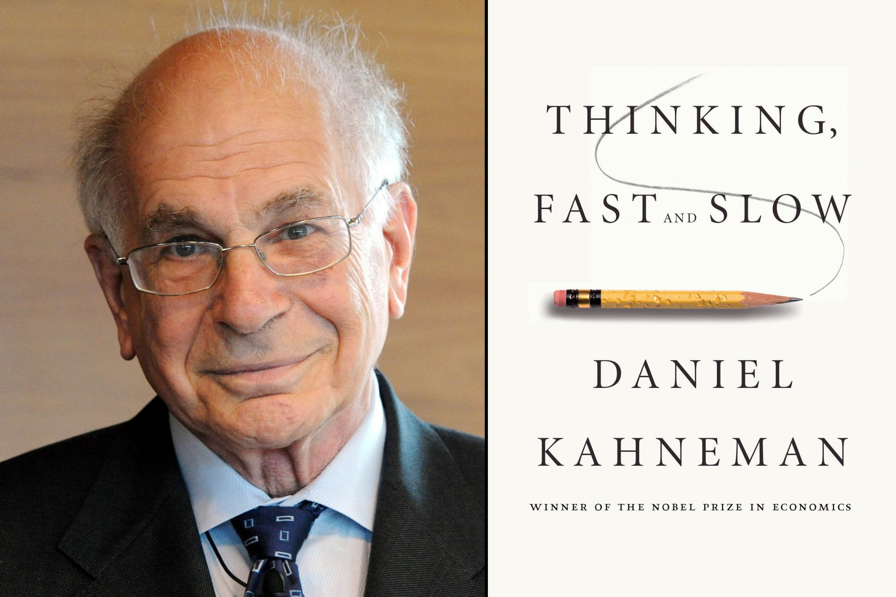

"Our comforting conviction that the world makes sense rests on a secure foundation: our almost unlimited ability to ignore our ignorance."

Here's a list of Daniel Kahneman's highlights and achievements
1934 - Born
1954 - Completed Bachelor degree in Psychology and began work with the Israeli Defense Forces
1958 - Studied for PhD in Psychology at University of California, Berkeley
1968 - Began working with Amos Tversky
1971 - Jointly published his first paper with Amos Tversky entitled "Belief in the Law of Small Numbers"
1974 - "Judgement Under Uncertainty: Heuristics and Biases" was published
1979 - The pair's most important work, "Prospect Theory", was published
1980 - A paper called "Toward a Positive Theory of Consumer Choice" was published by Richard Thaler. It was described by Kahneman as "the founding text in behavioural economics"
1980+ - Kahneman and Tversky became heavily involved in the development of this new approach to economic theory detailed by Thaler
1990+ - Kahneman began to focus on Hedonic psychology, which is the study of what makes experiences pleasant or unpleasant
1992 - Kahneman and Varey introduced the method of evaluating moments and episodes as a way to capture "experiences extended across time"
1998 - Along with David Schkade, Kahnman developed the notion of focusing illusion. This tries to explain why people make mistakes when estimating the effects of different scenarios on their future happiness
2002 - Awarded the Nobel Memorial Prize in Economics for his work in prospect theory
2003 - Awared the University of Louisville Grawemeyer Award for Psychology
2007 - Awarded the American Psychological Assocation's Award for Oustanding Lifetime Contributions to Psychology
2009 - Awarded an honourary doctorate from the department of Economics at Erasmus University in Rotterdam, Netherlands
2011 - Published his book 'Thinking, Fast and Slow' which was the winner of the Los Angeles Times Book Award for Current Interest
2012 - His book was awarded the National Academy of Sciences Communication Award for the best book published in 2011
2013 - American President Barrack Obama announced that Daniel Kahneman would be the recipient of the Presidential Medal of Freedom
2015 - Awarded an honourary doctorate from the Faculty of Arts at McGill University in Montreal
To learn more about Daniel Kahneman's extraordinary contributions to psychology and behavioural economics, check out this Wikipedia entry. I'd also strongly recommend his book.